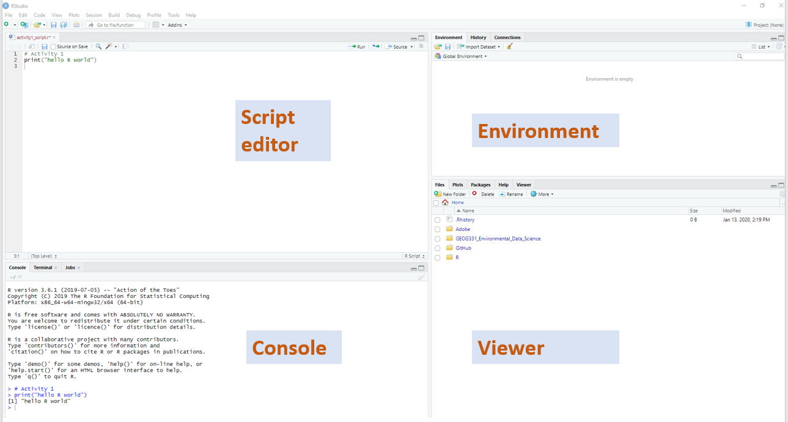
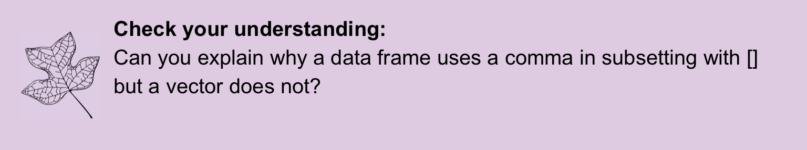
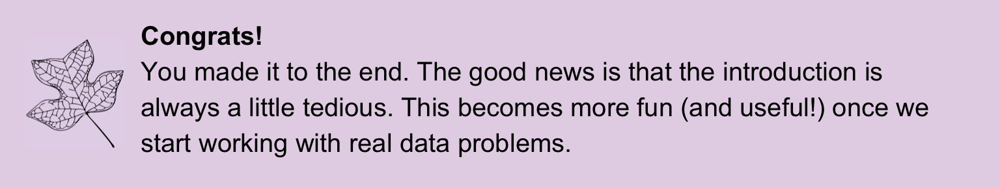

Tutorial 1: Intro to R
2023-08-07
Chapter 1 About
Start your learning journey!
1.2 First some terms:
R: a statistical programming software that can be used to analyze data
RStudio: a user friendly interface for running R
Cloud computing a remote computer that you access using your browser.
RStudio Cloud runs RStudio in a cloud computing environment. Each assignment or activity you do will open up in this virtual computer.
1.3 Getting to know Rstudio Cloud
RStudio Cloud helps create a standardized computing environment for us as a class that is specifically meant to support working in R. This means that you can access the same computing environment and you only need to run a web browser on a personal or Hamilton computer. This will allow coursework to be readily completed from any computer whether you are on or off campus. It also means that you don’t have to worry about installing R or storing data on your own personal computer.
You will have received an invitation to join the ENVST206-F21 workspace on RStudio Cloud through your Hamilton email. Once you have joined the workspace, you can access the projects section. A project is a collection of related R files and data. Assignments are projects that are set up to be read only and you will make your own copy when you open it. Your copy will automatically be set up with your user profile once you save it. You will see a blue box next to the project name indicating that it is an assignment. You will have the option to start the assignment for the first time or continue if you already started it.
Once you open the assignment, you will see an interface that looks something like this:

The Rstudio interface has 4 main components: 1. script window, 2. console, 3. environment, 4. viewer & information tabs. In the next section, you will learn more about each of these parts of the interface.
1.4 Introduction to R & RStudio
R is essentially a giant calculator with many options for plotting and built in functions for data analysis. The console runs your R code. It’s the calculator! You can type code into the console and it will run. However, you won’t be able to access that code later, just like many calculators. That’s why we use scripts.
R scripts allow you to save code in a text file to run in R. R scripts all have a .r extension. By itself, the script will do nothing. You need to actually tell R to run your code in the console. When you first open a Rstudio, there is often a blank work space with just the console unless I have set up some existing files to open for you. You can tell you are looking at the console by checking the tabs, and you will see information about your R version at the start.

New scripts can be created by going to New File and clicking on Rscript. If you wanted to open an existing Rscript, you can go to Open File.

Clicking a new script will prompt you to save into the file system created in our project computer:

You will see that saving your script will create a new file in the Files tab in the bottom right corner. This tab will be important when we start working with more data files.

The script opens up above the console and is ready for you to code!

You can get a better idea for the script/console set up by writing a simple line of code in the script and running it. Using the function print, any text within the function will be returned in the console. You can also use hashes # to make a comment so that you can document code. Let’s take a look at how this works before getting into the details. Here is the code in my script:

Nothing happens with this code until I run it in the console.You can run a line of code clicking in the line or a selection of code by highlighting it and pressing the run button (shown in the black circle).
There’s a few things to pay attention to in the console when you run code. The > symbol always indicates a new line of code. The + symbol means your line of code has not ended and will continue on to the next line. Your results will have numbers in brackets to describe the output. [1] indicates the start of the output.

Any variables run in the console are part of your working environment. Variables allow you to refer to the same data or calculations throughout your current R session the computer’s temporary memory. You’ll learn more about R code in the next section to fully understand the utility of the working environment.
1.5 R basics
1.5.1 A fancy calculator
Since R is just like a sophisticated calculator, you can read in numerical operations and will get the calculations as output. Type a few different operations like the one below that follow typical mathematical notation on a keyboard. Note I’ve included both the code (grey boxes) and outputs (blue boxes) here for an example.
# remember this is a comment so it won't do anything. R just ignores it.
# you need to use these to document code and write notes
# 6 raised to the 6 power
6^6[1] 46656[1] 215[1] -71.5.2 Variables
Typing in calculations can quickly become redundant and difficult when you have many observations. Creating a variable allows you to refer to the same object by typing its name. You can create a variable by first typing a name, then typing the assigner <- (= also works, but is not R convention). Anything to the right of the assigner will be refered to with the name you give. Below is an example where I know I will want to use the number 244435600 many times so I will give it a shorter, easier to remember name.
[1] 1222178000[1] 1222178001.5.3 Vectors
A vector is a one dimensional array of data. You can make a vector in R using the function c(). c stands for combine values into a vector where each value is separated by a comma. For example, here’s a vector with the elevation of the three highest peaks in the Adirondacks.
You will notice that both functions print and c are text followed by parentheses. This is a detail to pay attention to for the R syntax. Syntax refers to the rulues and structure of a coding language. What you learned about # and <- are examples of R syntax since these symbols have a specific meaning. Any time you see the format anyName() you can know this is a function. Functions are a key part of R. You already used functions by runnidn c and print. They expect certain inputs called arguments (like our numbers in the c function used to create peaks vector). Functions will also perform a task that saves you a lot of extra coding. You can immediately see the utility of functions by running summary statistics functions like: mean (average value of a vector), min (minimum value in a vector), max (maximum value in a vector).
[1] 5139.333[1] 4960When you create a variable like maxPeak there is no output shown in the console. It can look alarming, but it is actually a good sign! It means your code worked! The variable maxPeak was simply created. You can always run the name of variable with nothing else to get a print out:
[1] 5344If you look to your environment section of RStudio, you will see peaks and maxPeak are shown in the global environment. peaks is a data type numeric and it has 3 total objects. Numeric data are all numbers and can include numbers on both sides of the decimal. This is where watching your environment section is useful to check that your code is working as you expect.

You can now do calculations on each object in your vector. For example, if you want to convert the peak elevation to meters, you simply need to type in one calculation. You’ll notice, this calculation was not assigned as a named variable, and a vector of output is returned but not stored in the environment.
[1] 1628.772 1558.671 1511.734You can also apply vector operations on vectors that are the same length and a calculation for the element in each vector makes sense. For example, I can make a vector of the prominence (height from the base) and calculate the difference to find the difference between the elevation of the mountain and the prominence.
[1] 430 3014 4120You can also make vectors with other types of data beyond numeric. R supports data types such as dates, character strings, and integers. A character is any mixture of letters, numbers, and symbols. You can’t apply mathematical calculations to character. You can set up a vector of the mountain names by using quotes around each character element in the vector:
# quotes denote a character data type
peakNames <- c("Mount Marcy", "Algonquin Peak", "Mount Haystack")You can subset a vector using [] syntax. If you want to refer to just the first item in a vector, you can subset as follows:
[1] 53441.5.4 Data frames
The final basic type of data that will be useful to keep in mind is a data frame. Data frames are a matrix with column names and sometimes row names. All observations in a row are associated. Each column will have the same type of data. For example, you can make a dataframe with all of the high peaks information using the ‘data.frame’ function. For the data.frame arguments, you specify each vector to include as a column and the name of the column (left side of each equal sign).
# make a datframee
# you must include the column name = data vector
# seperating multiple columns with commas
highPeaks <- data.frame(elev = peaks,
prom = prom,
name = peakNames)A helpful way to check that your code ran as expected is to track the objects in your global environment. Vectors show up under values and data frames are shown under data. If you click the blue arrow button you will get a preview of the data frame.
You can subset a data frame using the [] syntax, but you need to account for the two dimensional nature of data frames. If you are taking all observations for a row or column, it can simply be left empty.
elev prom name
2 5114 2100 Algonquin Peak[1] "Mount Marcy" "Algonquin Peak" "Mount Haystack"[1] "Mount Marcy"

